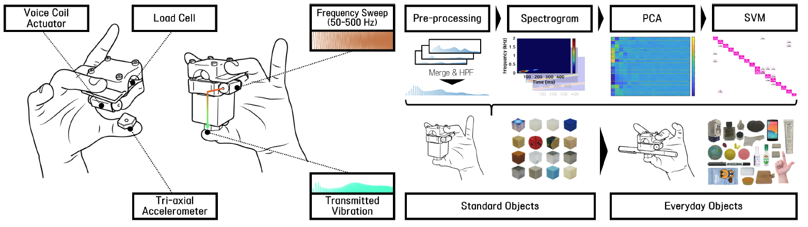
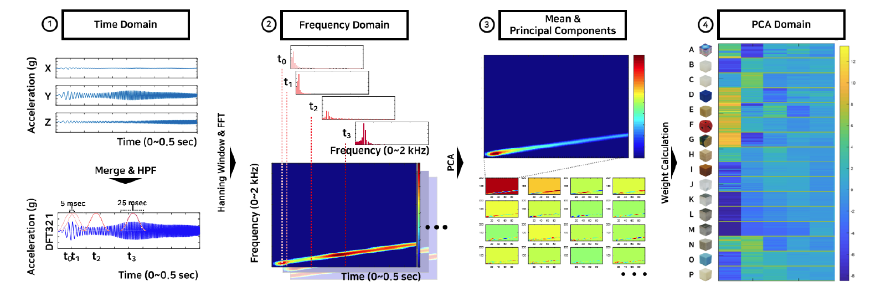
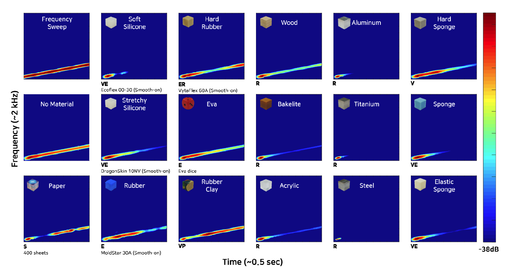
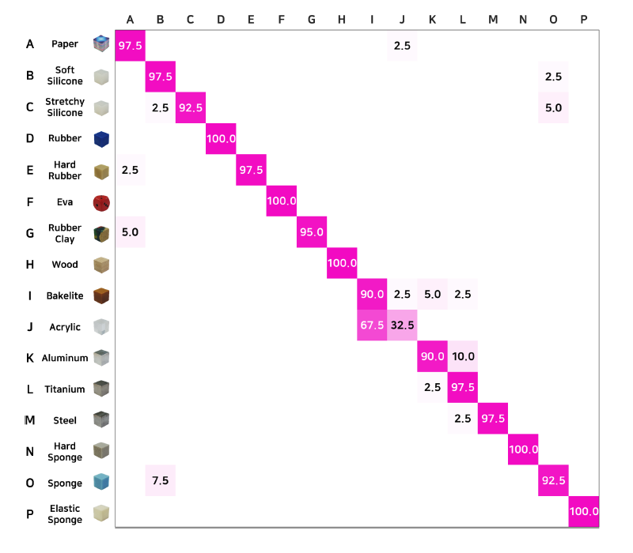
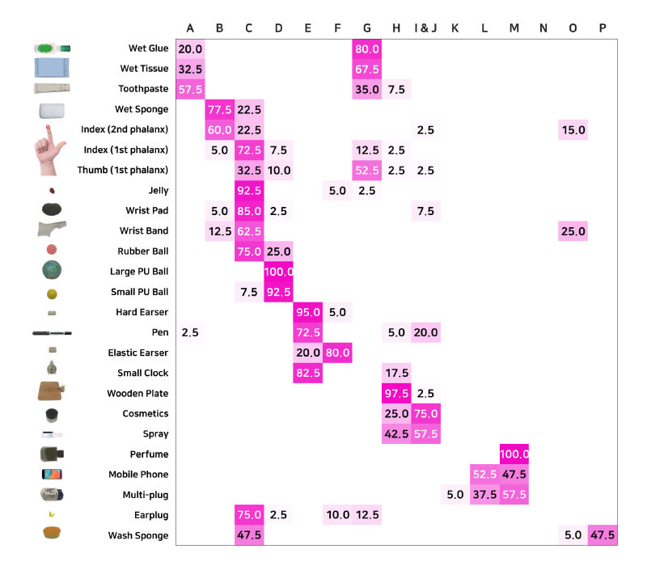
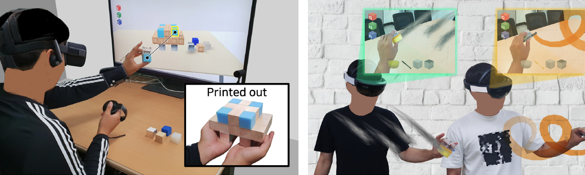

MATERIAL RECOGNITION
with vibratory signals
VibEye: Vibration-Mediated Object Recognition for Tangible Interactive Applications
ACM conference on Human Factors in Computing Systems (CHI'19)
ABSTRACT
We present VibEye: a vibration-mediated recognition system of objects for tangible interaction. A user holds an object between two fingers wearing VibEye. VibEye triggers a vibration from one finger, and the vibration that has propagated through the object is sensed at the other finger. This vibration includes information about the object's identity, and we represent it using a spectrogram. Collecting the spectrograms of many objects, we formulate the object recognition problem to a classical classification problem among the images. This simple method, when tested with 20 users, shows 92.5% accuracy for 16 objects of the same shape with various materials. This material-based classifier is also extended to the recognition of everyday objects. Lastly, we demonstrate several tangible applications where VibEye provides the needed functionality while enhancing user experiences. VibEye is particularly effective for recognizing objects made of different materials, which is difficult to distinguish by other means such as light and sound.
FULL CITATION
Seungjae Oh, Gyeore Yun, Chaeyong Park, Jinsoo Kim, and Seungmoon Choi. 2019. VibEye: Vibration-Mediated Object Recognition for Tangible Interactive Applications. In Proceedings of the 2019 CHI Conference on Human Factors in Computing Systems (CHI '19). ACM, 1–12. DOI:https://doi.org/10.1145/3290605.3300906
FIGURES

(Teaser image) VibEye: system overview and operation principle (left). Data processing pipeline (right-top). A classification model is built from 16 standard objects and then applied to categorize 25 everyday objects (right-bottom).

Computational Procedure for signal processing and object recognition.

Spectrograms of 16 standard objects. Objects are marked with material properties (R: rigid, E: elastic, V: viscous, P: plastic, and S: stacked).The cubic objects that we molded from liquid materials are specified with the material manufacturers and models.

Confusion matrix for recognizing standard objects.

Confusion matrix for categorizing 25 everyday objects to 16 standard objects.

Application scenarios of VibEye: (left) VR 3D modeling and (right) Drawing tools for the augmented reality